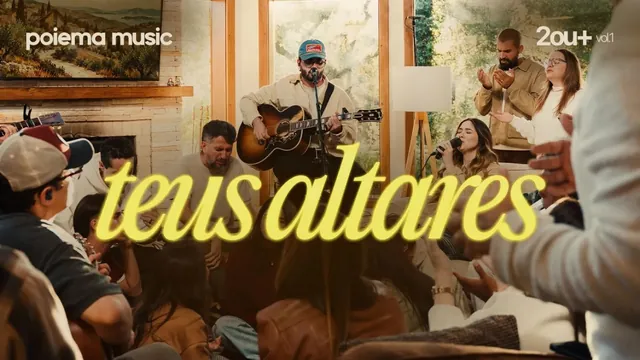
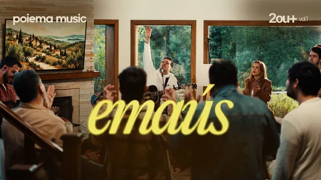
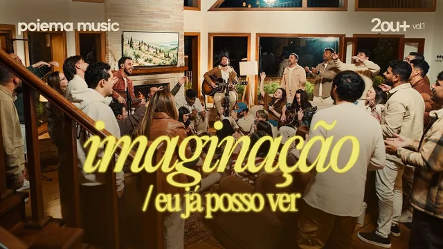
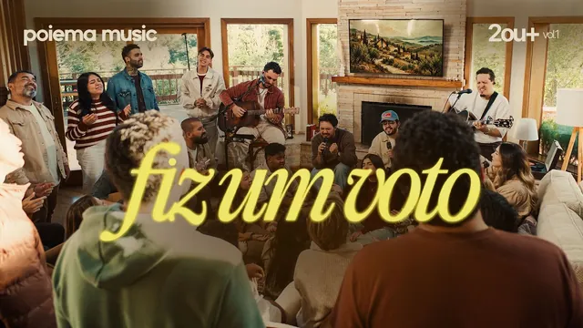
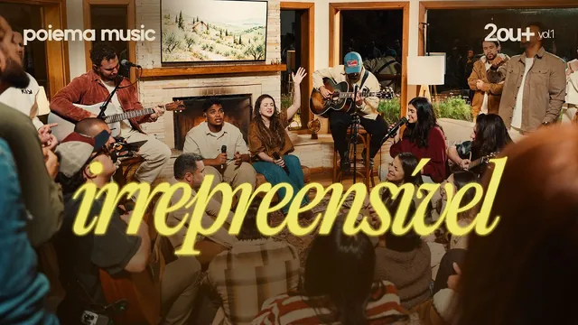

Novo álbum · Poiema Music
2ou+ vol.1
Um álbum com cara de casa cheia: gente reunida na sala, violão no colo e canções para cantar junto. Dê o play e continue ouvindo enquanto navega pelo site.
Faixas
toque em ouvir agora
- 1nossa comunhãoPoiema Music · clipe5:06
- 2a resposta que o mundo esperavaPoiema Music · clipe3:37
- 3

teus altaresPoiema Music · clipe12:09 - 4ritmo das correntezasPoiema Music · clipe4:03
- 5

emaúsPoiema Music · clipe5:05 - 6

imaginação / eu já posso verPoiema Music · clipe9:51 - 7santo de israelPoiema Music · clipe8:22
- 8

fiz um votoPoiema Music · clipe3:54 - 9

irrepreensívelPoiema Music · clipe9:55 - 10obras primas / desde o ventrePoiema Music · clipe7:24
Clipes
assista aos clipes
Ver as faixas do álbum
- 1Teus AltaresAndré Brisa, Morada · ao vivo8:13
- 2Uma Nova CançãoAndré Brisa, Morada · ao vivo5:11
- 3Santo de IsraelAndré Brisa, Morada · ao vivo9:47
- 4IrrepreensívelAndré Brisa, Léo Barreto · ao vivo8:11
- 5Obras-PrimasAndré Brisa, Léo Barreto · ao vivo6:06
- 6Desde o VentreAndré Brisa, Léo Barreto · ao vivo5:49
- 8ImaginaçãoAndré Brisa, Salvaon · ao vivo9:24
- 9Eu Já Posso VerAndré Brisa, Salvaon · ao vivo6:34